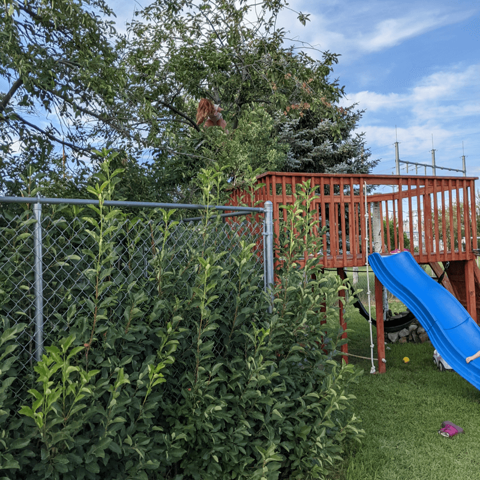
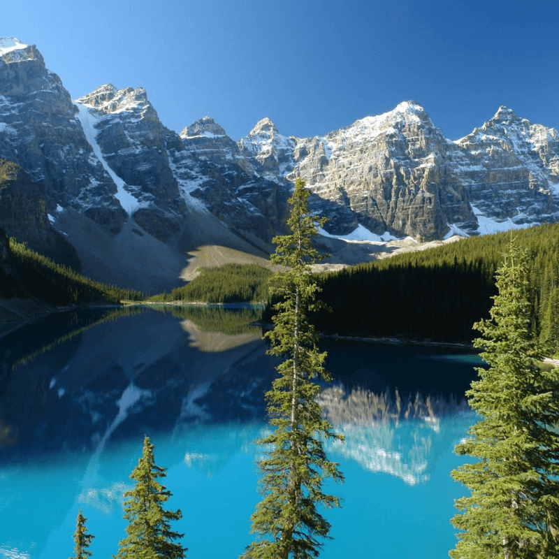
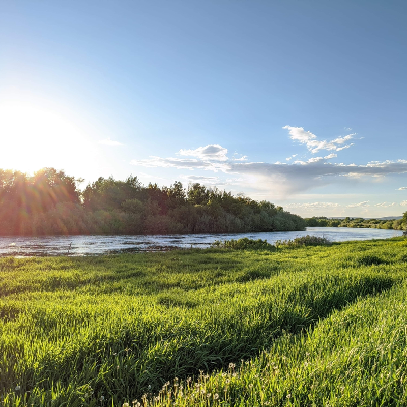
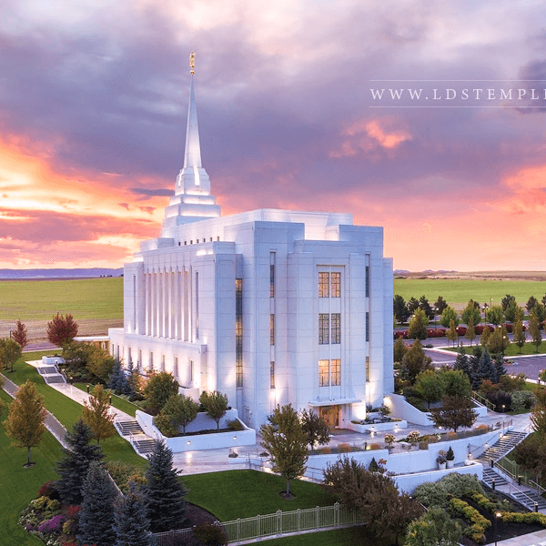
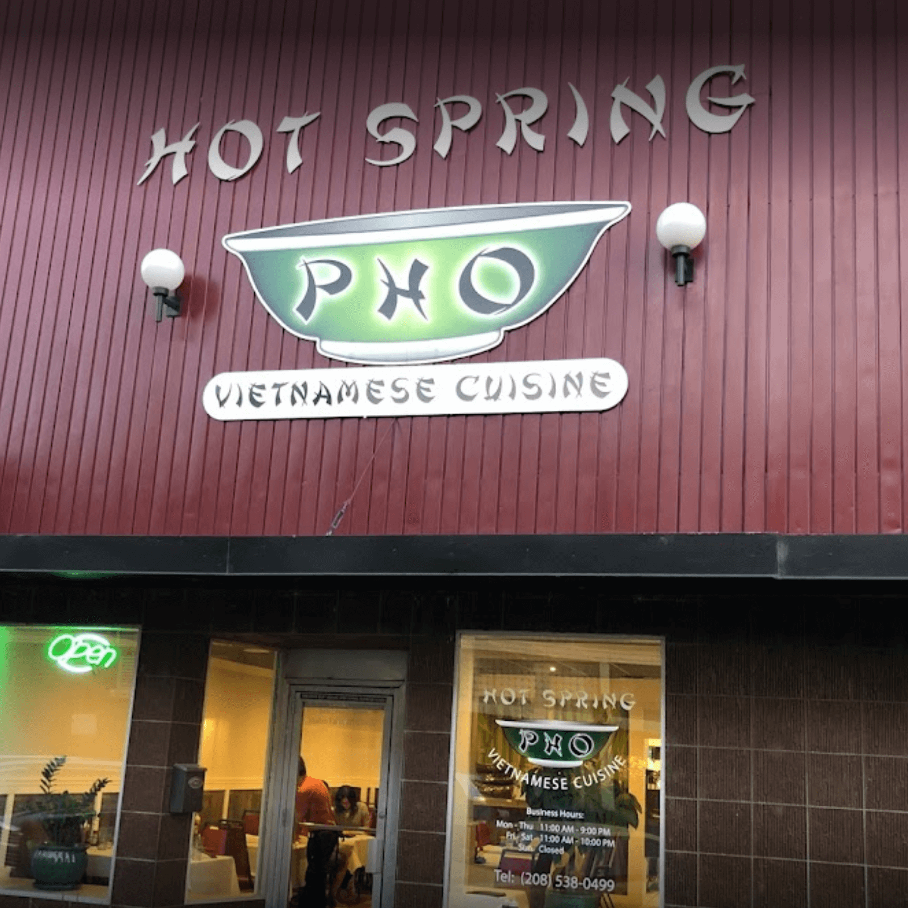

My Favorite Places
I grew up in Washington, lived in Brazil for two years then came back to Washington where I met and married my wife. We then moved to Idaho, Utah, Texas and back to Idaho. Each step of the journey has been an adventure and I love so much about the beautiful world that we live in.
|  |
Our HomeThis is a part of our backyard where we currently live. We built this tree house in 2020 right when Covid-19 was getting started. I love our home. We've had children here and our kids are growing here. I love being home more than anywhere else. |
|  |
Valley of the Ten PeaksValley of the Ten Peaks is a valley in Banff National Park in Alberta, Canada, which is crowned by ten notable peaks and also includes Moraine Lake. Growing up, my family would go camping in the Canadian Rockies every year. 🏕 This was my favorite place of anywhere up there. |
|  |
The Preserve at Henry's ForkThis is located in Idaho. We recently purchased land just a couple hundred feet from this river bank and we are so excited to build our home there. We go on walks there frequently and enjoy planning what our future home will be like. |
|  |
Rexburg Idaho TempleThis is the Rexburg Idaho Temple of The Church of Jesus Christ of Latter-day Saints. My wife and I love to come here so much. It is peaceful and strengthens us as a couple. We love bringing our children here and walking around the beautiful temple grounds. My younger children sometimes try to pick the flowers. 🙃 |
|  |
Hot Spring PhóWe just had dinner here tonight. 😇 It is my favorite restaurant. I absolutely love the food here. My wife and I love coming here, and our kids have even started to ask for this food. It's the best! |